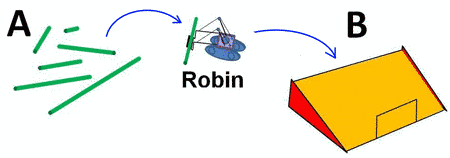
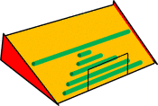

|
Le robot Robin fonctionne de la manière suivante :
|
 |
|  | Sachant que la situation finale est comme illustrée ci-contre, quelle règle a été appliquée pour choisir à chaque fois le tronc à ramasser ? |
Étudions les propositions une par une.
La bonne réponse est donc la réponse 2.
Cette tâche réalise un tri, selon une méthode proche du tri par sélection. Le tri par sélection consiste à rechercher le plus grand élément (ou le plus petit), le placer à la dernière position (ou la première), recommencer avec le second plus grand (ou le second plus petit), le placer en avant-dernière position (ou en deuxième position) et ainsi de suite jusqu'à avoir traité la totalité des éléments. Ici, la variante introduite porte sur le critère de sélection de l'élément : on choisit le second plus grand.
De plus, cette tâche présente la façon dont est exécuté ce tri, l'algorithme lui-même. Il consiste en l'exécution en boucle des actions : (1) sélectionner un élément, (2) déplacer cet élément. Le critère de sélection doit être exprimé de telle sorte qu'il fonctionne à chaque boucle. C'est ce qui est proposé dans les solutions.
Le tri est une opération très courante en informatique. De nombreux algorithmes de tri existent. Ils diffèrent en complexité et en ressources consommées. Le tri par sélection appartient à la famille des tris par comparaison. Il est particulièrement simple, mais inefficace sur de grandes quantités d'éléments (car il prend trop de temps).